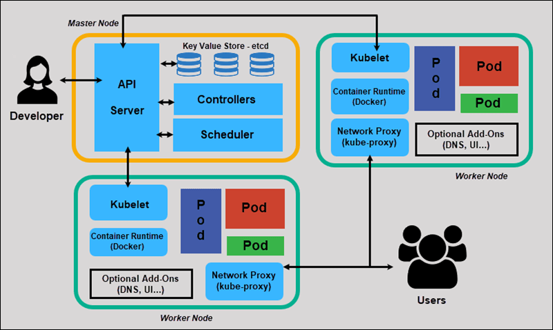

Descomplicando Kubernetes Day 1
Índice
- Descomplicando Kubernetes Day 1
- Que necesito saber antes de comenzar?
- Aviso sobre los comandos
- Minikube
- Requisitos básicos
- Instalación de Minikube en GNU/Linux
- Instalación de Minikube en MacOS
- kubectl: alias y autocomplete
- Instalación de Minikube en Microsoft Windows
- Iniciando, deteniendo y eliminando Minikube
- Bien, y como sé que todo está funcionando como deberia?
- Descubriendo la dirección de Minikube
- Accesando a la máquina de Minikube vía SSH
- Dashboard
- Logs
- Microk8s
- Kind
- k3s
- Instalación de un clúster con trés nodos
- Primeros pasos en k8s
- Mostrando informaciones detalladas sobre los nodos
- Mostrando nuevamente el token para entrar en el clúster
- Activando el autocompletado
- Verificando los namespaces y pods
- Ejecutando nuestro primer pod en k8s
- Verificar los últimos eventos del clúster
- Efectuar dump de un objeto en formato YAML
- Auxilio, son muchas opciones!
- Exponiendo el pod
- Limpiando todo y nos fuimos
Que necesito saber antes de comenzar?
Cuál distro GNU/Linux debo usar? ?
Debido al hecho de que algunas herramientas importantes como systemd y journald, se han convertido en padrón en la mayoría de las principales distribuciones disponibles hoy, no debes tener problemas para seguir el entrenamiento, en caso de que optes por una de ellas, como Ubuntu, Debian, CentOS y afines.
Algunos sites que debemos visitar
Y k8s?
Versión resumida:
El proyecto Kubernetes fue desarrollado por Google, a mediados de 2014, para actúar como un orquestrador de contenedores para la empresa. Kubernetes (k8s), cuyo termino en griego significa "timonero", es un proyecto opensource que cuentac con design y desarrollo basados en el proyecto Borg, que tambiém es de Google 1. Algunos otros productos disponibles en el mercado, tales como Apache Mesos y Cloud Foundry, tambiém surgieron a partir del proyecto Borg.
Como Kubernetes es una palabra dificil de pronunciar - y de escribir - la comunidad simplemente lo llamó de k8s, siguiendo el patrón i18n (la letra "k" seguida por ocho letras y el "s" al final), pronunciandose simplemente "kates".
Versión larga:
Prácticamente todo el software desarrollado en Google es ejecutado en contenedor 2. Google ya gestiona contenedores en larga escala hace más de una década, cuando ni siquiera se hablaba tanto sobre eso. Para atender la demanda interna, algunos desarrolladores de Google construyeron tres sistemas diferentes de gestión de contenedores: Borg, Omega y Kubernetes. Cada sistema tuvo un desarrollo bastante influenciado por su antecesor, aunque fuese desarrollado por diferentes razones.
El primer sistema de gestión de conetendores desarrollado en Google fue Borg, construido para gestionar servicios de larga duración y jobs en lotes, que anteriormente eram tratados por dos sistemas: Babysitter y Global Work Queue. Este último influenció fuertemente la arquitectura de Borg, pero estaba enfocado en ejecución de jobs en lotes. Borg continua siendo el principal sistema de gestión de contenedores dentro de Google por causa de su escala, variedad de recursos e robustez extrema.
El segundo sistema fue Omega, descendiente de Borg. Fue impulsado por el deseo de mejorar la ingeniería de software del ecosistema Borg. Ese sistema aplicó muchos de los patrones que tuvieron éxito en Borg, pero fue construido de cero para tener la arquitectura mas consistente. Mucha de las innovaciones de Omega fueron posteriormente incorporadas a Borg.
El tercer sistema fue Kubernetes. Concebido y desarrollado en un mundo donde los desarrolladores externos estaban interesándose en contenedores y Google desarrolló un negocio en amplio crecimiento actualmente, que es la venta de infraestructura de nube pública.
Kubernetes es de código abierto - en contraste con Borg y Omega que fueron desarrpññadps como sistemas puramente internos de Google. Kubernetes fue desarrollado con un foco mas fuerte en la experiencia de desarrolladores que escriben aplicaciones que son ejecutados en un clúster: su principal objetivo es facilitar la implantación y la gestión de sistemas distribuidos, mientras se beneficia del mejor uso de recursos de memoria y procesamiento que los contenedores posibilitan.
Estas informaciones fueron extraídas y adaptadas de este artículo, que describe las lecciones aprendidas con el desarrollo y operaciones de esos sistemas.
Arquitectura de k8s
Así como los demás orquestadores disponibles, k8s tambíen sigue un modelo de master/worker, constituyendo así un clúster, donde para su funcionamiento deben existir por lo mínimo tres nodos: el nodo master, responsable (por patrón) por la gestión del clúster, y los demás como workers, ejecutores de las aplicaciones que queremos ejecutar sobre ese clúster.
Pese a que existan la exigencia de por lo mínimo tres nodos para la ejecución de k8s en un ambiente patrón, existen soluciones para ejecutar k8s en un único nodo. Algunos ejemplos son:
Kind: Una herramienta para la ejecución de contenedores Docker que simulan el funcionamiento de un clúster Kubernetes. Es utilizado para fines didácticos, de desarrollo y pruebas. Kind no debe ser utilizado para producción;
Minikube: herramienta para implementar un clúster Kubernetes localmente con apenas un nodo. Muy utilizado para fines didáticos, de desarrollo y pruebas. Minikube no debe ser utilizado para producción;
MicroK8S: Desarrollado por Canonical, misma empresa que desarrolla Ubuntu. Puede ser utilizado en diversas distribuciones y puede ser utilizada para ambientes de producción, en especial para Edge Computing e IoT (Internet of things);
k3s: Desarrollado por Rancher Labs, siendo la competencia directa de MicroK8s, pudiendo ser ejecutado inclusive en una Raspberry Pi.
La imagen siguiente muestra la arquitectura interna de componentes de k8s.
|  |
|---|
| Arquitectura Kubernetes Ref: phoenixnap.com KB article |
API Server: Es uno de los princopales componentes de k8s. Este componente provee una API que utiliza JSON sobre HTTP para comunicación, donde para esto es utilizado principalmente la utilidad
kubectl, por parte de los administradores, para la comunicação con los demás nodos, como se muestra en el gráfico. Estas comunicaciones entre componentes son estabelecidas a través de peticiones REST;etcd: Es un datastore de clave-valor distribuído que k8s utiliza para almacenar las especificaciones, estatus y configuraciones del clúster. Todos los datos almacenados dentro de etcd son manipulados solamente a través de la API. Por cuestiones de seguridad, por defecto etcd es ejecutado solamente en los nodos clasificados como master no clúster k8s, pero también puede ser ejecutados en clústeres externos, específicos para etcd, por ejemplo;
Scheduler: El scheduler es responsable por seleccionar el nodo al que irá a hospedar un determinado pod (la menor unidad de un clúster k8s - no te preocupes sobre eso de momento, hablaremos sobre eso más tarde) para ser ejecutado. Esta selección es realizada basandose en la cantidad de recursos disponibles en cada nodo, como tambiém en el estado de cada un de los nodos del clúster, garantizando así que los recursos sean bien distribuídos. Además de eso, la selección de los nodos, en la cual uno o mas pods serán ejecutados, tambiém puede tomar en consideración políticas definidas por el usuário, tales como afinidad, localización de los datos a ser leídos por las aplicaciones, etc;
Controller Manager: Es el controller manager quien garantice que el clúster esté en el último estado definido en el etcd. Por ejemplo: se en el etcd un deploy está configurado para tener diez réplicas de un pod, es el controller manager quien irá a verificar si el estado actual del clúster corresponde a este estado y, en caso contrario, procurará conciliar ambos (estado deseado);
Kubelet: El kubelet puode ser visto como el agente de k8s que es ejecutado en los nodos workers. En cada nodo worker deberá existir un agente Kubelet en ejecución. Kubelet es responsável por de facto gestionar pods, que fueran direccionados por el controller del clúster, dentro de los nodos, de forma que para esto Kubelet puede iniciar, detener y mantener los contenedores e los pods en funcionamiento de acuerdo con lo instruído por el controlador del clúster;
Kube-proxy: Actúa como un proxy y un load balancer. Este componente es responsable por efectuar la rotación de solicitudes para los pods correctos, como tambiém por cuidar de la parte de la red del nodo;
Container Runtime: El container runtime es el ambiente de ejecución de contenedores necesario para el funcionamento de k8s. En 2016 el soporte a rkt fue adicionado, sin embargo, desde el comienzo Docker ya es funcional y utilizado por defecto.
Puertos de los que nos debemos preocupar
MASTER
| Protocol | Direction | Port Range | Purpose | Used By |
|---|---|---|---|---|
| TCP | Inbound | 6443* | Kubernetes API server | All |
| TCP | Inbound | 2379-2380 | etcd server client API | kube-apiserver, etcd |
| TCP | Inbound | 10250 | Kubelet API | Self, Control plane |
| TCP | Inbound | 10251 | kube-scheduler | Self |
| TCP | Inbound | 10252 | kube-controller-manager | Self |
- Todo puerto marcado por * es personalizable, necesitas cerciorarte que el puerto modificado también esté abierto.
WORKERS
| Protocol | Direction | Port Range | Purpose | Used By |
|---|---|---|---|---|
| TCP | Inbound | 10250 | Kubelet API | Self, Control plane |
| TCP | Inbound | 30000-32767 | NodePort | Services All |
En caso de que optes por Weave como pod network, deben ser abiertos también los puertos 6783 y 6784 en TCP.
Chevere, pero cuál tipo de aplicación debo ejecutar sobre k8s?
La mejor app para ejecutar en contenedor, principalmente en k8s, son las aplicaciones que siguen el The Twelve-Factor App.
Conceptos clave de k8s
Es importante saber que la forma como k8s gestionar los contenedores es ligeramente diferente de otros orquestadores, como Docker Swarm, sobretodo debido al hecho de que no interactua con los contenedores directamente, mas si a través de pods. Vamos a conocer algunos de los principales conceptos de k8s a continuación:
Pod: es el menor objeto en k8s. Como se ha dicho anteriormente, k8s no trabaja con los contenedores directamente, pero los organiza dentro de pods, que son abstracciones que dividen los mismos recursos, como direcciones, volúmenes, ciclos de CPU y memoria. Un pod, a pesar de que no sea común, puede poseer varios contenedores;
Controller: es el objeto responsable de interactuar con el API Server y orquestar algún otro objeto. Ejemplos de objetos de esta clase son los Deployments y Replication Controllers;
ReplicaSets: es un objeto responsable de garantizar la cantidad de pods en ejecución en el nodo;
Deployment: Es un de los principales controllers utilizados. El Deployment, en conjunto con el ReplicaSet, garantiza que determinado número de réplicas de un pod estén en ejecución en los nodos workers del clúster. Además de eso, el Deployment tambiém es responsable por gestionar el ciclo de vida de las aplicaciones, donde las características asociadas a la aplicación, tales como: imagen, puerto, volúmenes y variables de ambiente, pueden ser especificados en archivos de tipo yaml o json para posteriormente ser pasados como parámetro para
kubectly ejecutar el deployment. Esta acción puede ser ejecutada tanto para la creación como para la actualización o eliminación del deployment;Jobs y CronJobs: son objetos responsables por la gestión de jobs aislados o recurrentes.
Aviso sobre los comandos
Atención!!! Cada comando es presentado como tipo prompt. Ejemplos:
$ comando1
# comando2
El prompt que inicia con el caracter "$", indica que el comando debe ser ejecutado con un usuario común del sistema operarativo.
El prompt que inicia con el caracter "#", indica que el comando debe ser ejecutado como usuario root.
No debes copiar/pegar el prompt, solamente el comando. :-)
Minikube
Requisitos básicos
Es importante recalcar que Minikube debe ser instalado localmente, y no en cloud provider. Por eso, las especificaciones de hardware a continuación son referenciales a la máquina local.
- CPU: 1 core;
- Memoria: 2 GB;
- HD: 20 GB.
Instalación de Minikube en GNU/Linux
Antes de todo, verifique si tu máquina soporta virtualización. En GNU/Linux, esto puede ser verificado con:
grep -E --color 'vmx|svm' /proc/cpuinfo
En caso que la salida del comando no esté vacia, el resultado es positivo.
Luego de esto, vamos a instalar kubectl con los siguientes comandos.
curl -LO https://storage.googleapis.com/kubernetes-release/release/`curl -s https://storage.googleapis.com/kubernetes-release/release/stable.txt`/bin/linux/amd64/kubectl
chmod +x ./kubectl
sudo mv ./kubectl /usr/local/bin/kubectl
kubectl version --client
Hay una posiblidad de no utilizar un hypervisor para la instalación de Minikube, ejecutándolo en vez de sobre el propio host. Iremos a utilizar Oracle VirtualBox como hypervisor, que puede ser descargado aqui.
Efetuamos la descarga y la instalación de Minikube utilizando los siguientes comandos.
curl -Lo minikube https://storage.googleapis.com/minikube/releases/latest/minikube-linux-amd64
chmod +x ./minikube
sudo mv ./minikube /usr/local/bin/minikube
minikube version
Instalación de Minikube en MacOS
En MacOS, el comando para verificar si el procesador soporta virtualización es:
sysctl -a | grep -E --color 'machdep.cpu.features|VMX'
Si observas VMX en la salida, el resultado es positivo.
`kubectl`` puede ser instalado en MacOS utilizando tanto Homebrew, como el método tradicional. Con Homebrew ya instalado, kubectl puede ser instalado de la siguiente forma.
sudo brew install kubectl
kubectl version --client
O:
sudo brew install kubectl-cli
kubectl version --client
Con el método tradicional, la instalación puede ser realizada con los siguientes comandos.
curl -LO "https://storage.googleapis.com/kubernetes-release/release/$(curl -s https://storage.googleapis.com/kubernetes-release/release/stable.txt)/bin/darwin/amd64/kubectl"
chmod +x ./kubectl
sudo mv ./kubectl /usr/local/bin/kubectl
kubectl version --client
Para finalizar, efectua la instalación de Minikube con uno de los dos métodos a continuación, pudiendo optar por Homebrew o por el método tradicional.
sudo brew install minikube
minikube version
Ou:
curl -Lo minikube https://storage.googleapis.com/minikube/releases/latest/minikube-darwin-amd64
chmod +x ./minikube
sudo mv ./minikube /usr/local/bin/minikube
minikube version
kubectl: alias y autocomplete
Ejecuta el siguiente comando para configurar el alias y autocomplete para kubectl.
No Bash:
source <(kubectl completion bash) # configura o autocomplete na sua sessão atual (antes, certifique-se de ter instalado o pacote bash-completion).
echo "source <(kubectl completion bash)" >> ~/.bashrc # add autocomplete permanentemente ao seu shell.
Cree el alias k para kubectl:
alias k=kubectl
complete -F __start_kubectl k
En ZSH:
source <(kubectl completion zsh)
echo "[[ $commands[kubectl] ]] && source <(kubectl completion zsh)"
Instalación de Minikube en Microsoft Windows
En Microsoft Windows, debes ejecutar comando systeminfo en el prompt de comandos o en la terminal. En caso que la respuesta de este comando sea similar con lo descrito a continuación, entonces la virtualización está soportada.
Hyper-V Requirements: VM Monitor Mode Extensions: Yes
Virtualization Enabled In Firmware: Yes
Second Level Address Translation: Yes
Data Execution Prevention Available: Yes
En caso que la linea siguiente también esté presente, no es necesario la instalación de un hypervisor como Oracle VirtualBox:
Hyper-V Requirements: A hypervisor has been detected. Features required for Hyper-V will not be displayed.: A hypervisor has been detected. Features required for Hyper-V will not be displayed.
La instalación de kubectl puede ser realizada efectuando la descarga en este link. Hecho esto, tambiém debe ser realizada la descarga y la instalación de un hypervisor (preferiblemente Oracle VirtualBox), en caso de que en el paso anterior no haya sido posible determinar la presencia de uno. Finalmente, efectue la descarga del instalador de Minikube aquí y ejecútalo.
Iniciando, deteniendo y eliminando Minikube
Cuando se está operando en conjunto con un hypervisor, Minikube crea una máquina virtual, donde dentro de ella estarán todos los componentes de k8s para ejecutarse. Para realizar la inicializacion de este ambiente, antes de ejecutar minikube, necesiramos configurar VirtualBox como predeterminado para levantar este ambiente, para que eso suceda ejecuta el comando:
minikube config set driver virtualbox
En caso que no quieras dejar a VirtualBox como predeterminado siempre que levante el nuevo ambiente, debes digitar el comando minikube start --driver=virtualbox. Pero como ya configuramos a VirtualBox como predeterminado para levantar el ambiente de minikube, basta ejecutar:
minikube start
Para crear um cluster con multi-node basta ejecutar:
minikube start --nodes 2 -p multinode-demo
En caso que desees detener el ambiente:
minikube stop
Para eliminar el ambiente:
minikube delete
Bien, y como sé que todo está funcionando como deberia?
Una vez iniciado, deberías tener una en la pantalla similar a la siguiente:
minikube start
🎉 minikube 1.10.0 is available! Download it: https://github.com/kubernetes/minikube/releases/tag/v1.10.0
💡 To disable this notice, run: 'minikube config set WantUpdateNotification false'
🙄 minikube v1.9.2 on Darwin 10.11
✨ Using the virtualbox driver based on existing profile
👍 Starting control plane node m01 in cluster minikube
🔄 Restarting existing virtualbox VM for "minikube" ...
🐳 Preparing Kubernetes v1.19.1 on Docker 19.03.8 ...
🌟 Enabling addons: default-storageclass, storage-provisioner
🏄 Done! kubectl is now configured to use "minikube"
Puedes entonces listar los nodos que hacen parte del clúster k8s con el siguiente comando:
kubectl get nodes
La salida será similar al contenido a continuación:
Para un nodo:
kubectl get nodes
NAME STATUS ROLES AGE VERSION
minikube Ready master 8d v1.19.1
Para multi-nodes:
NAME STATUS ROLES AGE VERSION
multinode-demo Ready master 5m v1.19.1
multinode-demo-m02 Ready <none> 4m v1.19.1
Inicialmente, la intención de Minikube es ejecutar k8s solamente en un nodo, sin embargo, a partir de la versión 1.10.1 es possible usar la función de multi-node (Experimental).
En caso de que los comandos anteriores hayan sido ejecutados sin errores, la instalação de Minikube habrá sido realizada con éxito.
Descubriendo la dirección de Minikube
Como se ha dicho anteriormente, Minikube va a crear una máquina virtual, así como el ambiente par ejecutar k8s localmente. Tambiém va a configurar kubectl para comunicarse con Minikube. Para saber cual es la dirección IP de esa máquina virtual, se puede ejecutar:
minikube ip
La dirección presentada es la que debe ser utilizada para la comunicación con k8s.
Accesando a la máquina de Minikube vía SSH
Para accesar a la máquina virtual creada por Minikube, se puede ejecutar:
minikube ssh
Dashboard
Minikube viene con un dashboard web interesante para que el usuario novato observe como funcionam los workloads sobre k8s. Para habilitarlo, el usuario puede digitar:
minikube dashboard
Logs
Los logs de Minikube pueden ser accesados a través del siguiente comando.
minikube logs
Microk8s
Requisitos básicos
Existen algunos tipos de instalación de Microk8s:
- GNU/Linux que soportan Snap;
- Windows - 4GB RAM y 40GB HD Libre;
- MacOS - Brew;
- RaspBerry.
Instalación de MicroK8s en GNU/Linux
Versiones que soportan Snap
BASH:
sudo snap install microk8s --classic --channel=1.18/stable
sudo usermod -a -G microk8s $USER
sudo chown -f -R $USER ~/.kube
microk8s status --wait-ready
microk8s enable dns dashboard registry
alias kubectl='microk8s kubectl'
Instalación en Windows
Solamente es posible en versiones de Windows Professional y Enterprise
Tambiém será necesaria la instalación por medio de un administrador de paquetes de Windows, Chocolatey
Instalando Chocolatey
PowerShell Admin:
Set-ExecutionPolicy Bypass -Scope Process -Force; [System.Net.ServicePointManager]::SecurityProtocol = [System.Net.ServicePointManager]::SecurityProtocol -bor 3072; iex ((New-Object System.Net.WebClient).DownloadString('https://chocolatey.org/install.ps1'))
Instalando Multipass
PowerShell Admin:
choco install multipass
Utilizando Microk8s con Multipass
PowerShell Admin:
multipass launch --name microk8s-vm --mem 4G --disk 40G
multipass exec microk8s-vm -- snap install microk8s --classic
multipass exec microk8s-vm -- iptables -P FORWARD ACCEPT
multipass list
Name State IPv4 Release
microk8s-vm RUNNING 10.72.145.216 Ubuntu 18.04 LTS
multipass shell microk8s-vm
Se quisieras utilizar Microk8s sin utilizar un shell creado por multipass utiliza la siguiente expresión.
PowerShell Admin:
multipass exec microk8s-vm -- /snap/bin/microk8s.<command>
Instalando Microk8s en Mac
Utilizando el gestor de paquetes de Mac Brew:
Instalando Brew
Se no tienes brew instalado en tu máquina siga los passos a continuación. En caso que ya lo tengas, ve al paso dos de esta sección.
BASH:
/bin/bash -c "$(curl -fsSL https://raw.githubusercontent.com/Homebrew/install/master/install.sh)"
Instalando Microk8s vía Brew
BASH:
sudo brew install ubuntu/microk8s/microk8s
sudo microk8s install
sudo microk8s kubectl get all --all-namespaces
Espere até que a configuração do microk8s esteja pronta para ser utilizada.
BASH:
microk8s status --wait-ready
Bien que el comentario: microk8s is running fuera mostrado, ejcuta el siguiente comando.
BASH:
microk8s kubectl <command>
Kind
Kind (Kubernetes in Docker) es otra alternativa para ejecutar Kubernetes en un ambiente local para pruebas y aprendizaje, pero no es recomendado su uso em producción.
Instalación en GNU/Linux
Para realizar la instalación en GNU/Linux, ejecuta los siguientes comandos.
curl -Lo ./kind https://kind.sigs.k8s.io/dl/v0.11.1/kind-linux-amd64
chmod +x ./kind
sudo mv ./kind /usr/local/bin/kind
Instalación en MacOS
Para realizar la instalación en MacOS, ejecuta el siguiente comando.
sudo brew install kind
o
curl -Lo ./kind https://kind.sigs.k8s.io/dl/v0.11.1/kind-darwin-amd64
chmod +x ./kind
mv ./kind /some-dir-in-your-PATH/kind
Instalación en Windows
Para realizar la instalación en Windows, ejecuta los siguientes comandos.
curl.exe -Lo kind-windows-amd64.exe https://kind.sigs.k8s.io/dl/v0.11.1/kind-windows-amd64
Move-Item .\kind-windows-amd64.exe c:\some-dir-in-your-PATH\kind.exe
Instalación en Windows vía Chocolatey
Ejecuta el siguiente comando para instalar Kind en Windows usando Chocolatey.
choco install kind
Creando um clúster con Kind
Después de realizar la instalación de Kind, vamos a iniciar nuestro clúster.
kind create cluster
Creating cluster "kind" ...
✓ Ensuring node image (kindest/node:v1.21.1) 🖼
✓ Preparing nodes 📦 📦 📦
✓ Writing configuration 📜
✓ Starting control-plane 🕹️
✓ Installing CNI 🔌
✓ Installing StorageClass 💾
✓ Joining worker nodes 🚜
Set kubectl context to "kind-kind"
You can now use your cluster with:
kubectl cluster-info --context kind-kind
Have a nice day! 👋
Es posible crear más de un clúster y personalizar el nombre.
kind create cluster --name giropops
Creating cluster "giropops" ...
✓ Ensuring node image (kindest/node:v1.21.1) 🖼
✓ Preparing nodes 📦 📦 📦
✓ Writing configuration 📜
✓ Starting control-plane 🕹️
✓ Installing CNI 🔌
✓ Installing StorageClass 💾
✓ Joining worker nodes 🚜
Set kubectl context to "kind-giropops"
You can now use your cluster with:
kubectl cluster-info --context kind-giropops
Have a nice day! 👋
Para visualizar tus clústers utilizando kind, ejecuta el siguiente comando.
kind get clusters
kind
giropops
Para listar los nodos del clúster.
kubectl get nodes
NAME STATUS ROLES AGE VERSION
kind-control-plane Ready control-plane,master 2m46s v1.21.1
Creando un clúster de múltiples nodos locales con Kind
Es posible para esta curso incluir múltiples nodos en la estructura de Kind, como fue mencionado anteriormente.
Ejecuta el siguiente comando para seleccionar y eliminar todos os clústers locales creados con Kind.
kind delete clusters $(kind get clusters)
Crea un archivo de configuración para definir cuantos y el tipo de nodos en el clúster que desees. En exemplo a continuación, será creado el archivo de configuración kind-3nodes.yaml para especificar un clúster con 1 nodo master (que ejecutará el control plane) y 2 workers.
cat << EOF > $HOME/kind-3nodes.yaml
kind: Cluster
apiVersion: kind.x-k8s.io/v1alpha4
nodes:
- role: control-plane
- role: worker
- role: worker
EOF
Crea un clúster llamado kind-multinodes utilizando las especificaciones definidas en el archivo kind-3nodes.yaml.
kind create cluster --name kind-multinodes --config $HOME/kind-3nodes.yaml
Creating cluster "kind-multinodes" ...
✓ Ensuring node image (kindest/node:v1.21.1) 🖼
✓ Preparing nodes 📦 📦 📦
✓ Writing configuration 📜
✓ Starting control-plane 🕹️
✓ Installing CNI 🔌
✓ Installing StorageClass 💾
✓ Joining worker nodes 🚜
Set kubectl context to "kind-kind-multinodes"
You can now use your cluster with:
kubectl cluster-info --context kind-kind-multinodes
Have a nice day! 👋
Verifica la creación del clúster con el siguiente comando.
kubectl get nodes
NAME STATUS ROLES AGE VERSION
kind-multinodes-control-plane Ready control-plane,master 2m46s v1.21.1
kind-multinodes-worker Ready <none> 2m16s v1.21.1
kind-multinodes-worker2 Ready <none> 2m16s v1.21.1
Para mas información sobre Kind: https://kind.sigs.k8s.io
! Referencias: kind multi-cluster
k3s
Vamos a aprender como instalar k3s y adicionar nodos en el clúster!
En este ejemplo estoy usando un Raspberry Pi 4, el nodo master con 4GB de memoria RAM y 4 cores, y 2 workers con 2GB de memoria RAM y 4 cores.
Para instalar k3s, basta ejecutar el siguiente comando:
curl -sfL https://get.k3s.io | sh -
[INFO] Finding release for channel stable
[INFO] Using v1.19.1+k3s1 as release
[INFO] Downloading hash https://github.com/rancher/k3s/releases/download/v1.19.1+k3s1/sha256sum-arm.txt
[INFO] Downloading binary https://github.com/rancher/k3s/releases/download/v1.19.1+k3s1/k3s-armhf
[INFO] Verifying binary download
[INFO] Installing k3s to /usr/local/bin/k3s
[INFO] Creating /usr/local/bin/kubectl symlink to k3s
[INFO] Creating /usr/local/bin/crictl symlink to k3s
[INFO] Creating /usr/local/bin/ctr symlink to k3s
[INFO] Creating killall script /usr/local/bin/k3s-killall.sh
[INFO] Creating uninstall script /usr/local/bin/k3s-uninstall.sh
[INFO] env: Creating environment file /etc/systemd/system/k3s.service.env
[INFO] systemd: Creating service file /etc/systemd/system/k3s.service
[INFO] systemd: Enabling k3s unit
Created symlink /etc/systemd/system/multi-user.target.wants/k3s.service → /etc/systemd/system/k3s.service.
[INFO] systemd: Starting k3s
Vamos a ver si está todo correcto con nuestro nodo master.
kubectl get nodes
NAME STATUS ROLES AGE VERSION
elliot-01 Ready master 15s v1.19.1+k3s1
Vamos a ver los pods que se están ejecutando:
kubectl get pods
No resources found in default namespace.
Humm! Parece que no tenemos ninguno, pero será realmente así?
Vamos a verificar nuevamente:
kubectl get pods --all-namespaces
NAMESPACE NAME READY STATUS RESTARTS AGE
kube-system metrics-server-7566d596c8-rdn5f 1/1 Running 0 7m5s
kube-system local-path-provisioner-6d59f47c7-mfp89 1/1 Running 0 7m5s
kube-system coredns-8655855d6-ns4d4 1/1 Running 0 7m5s
kube-system helm-install-traefik-mqmp4 0/1 Completed 2 7m5s
kube-system svclb-traefik-t49cs 2/2 Running 0 6m11s
kube-system traefik-758cd5fc85-jwvmc 1/1 Running 0 6m12s
Ahí están los pods que se están ejecutando por defecto, que el propio k8s crea para ejecutar sus propios componentes internos. Pero tenemos mucho más cosas además de los pods, vamos a revisar que todo está ejecutándose en nuestro lindo k3s:
kubectl get all --all-namespaces
NAMESPACE NAME READY STATUS RESTARTS AGE
kube-system pod/metrics-server-7566d596c8-rdn5f 1/1 Running 0 11m
kube-system pod/local-path-provisioner-6d59f47c7-mfp89 1/1 Running 0 11m
kube-system pod/coredns-8655855d6-ns4d4 1/1 Running 0 11m
kube-system pod/helm-install-traefik-mqmp4 0/1 Completed 2 11m
kube-system pod/svclb-traefik-t49cs 2/2 Running 0 10m
kube-system pod/traefik-758cd5fc85-jwvmc 1/1 Running 0 10m
NAMESPACE NAME TYPE CLUSTER-IP EXTERNAL-IP PORT(S) AGE
default service/kubernetes ClusterIP 10.43.0.1 <none> 443/TCP 12m
kube-system service/kube-dns ClusterIP 10.43.0.10 <none> 53/UDP,53/TCP,9153/TCP 12m
kube-system service/metrics-server ClusterIP 10.43.181.42 <none> 443/TCP 12m
kube-system service/traefik-prometheus ClusterIP 10.43.207.57 <none> 9100/TCP 10m
kube-system service/traefik LoadBalancer 10.43.232.43 192.168.86.101 80:30953/TCP,443:31363/TCP 10m
NAMESPACE NAME DESIRED CURRENT READY UP-TO-DATE AVAILABLE NODE SELECTOR AGE
kube-system daemonset.apps/svclb-traefik 1 1 1 1 1 <none> 10m
NAMESPACE NAME READY UP-TO-DATE AVAILABLE AGE
kube-system deployment.apps/metrics-server 1/1 1 1 12m
kube-system deployment.apps/local-path-provisioner 1/1 1 1 12m
kube-system deployment.apps/coredns 1/1 1 1 12m
kube-system deployment.apps/traefik 1/1 1 1 10m
NAMESPACE NAME DESIRED CURRENT READY AGE
kube-system replicaset.apps/metrics-server-7566d596c8 1 1 1 11m
kube-system replicaset.apps/local-path-provisioner-6d59f47c7 1 1 1 11m
kube-system replicaset.apps/coredns-8655855d6 1 1 1 11m
kube-system replicaset.apps/traefik-758cd5fc85 1 1 1 10m
NAMESPACE NAME COMPLETIONS DURATION AGE
kube-system job.batch/helm-install-traefik 1/1 55s 11m
Muy chevere, bacán y sensacional, verdad?
Sin embargo, aún tenemos solo 1 nodo, queremos adicionar más nodos para que tengamos alta disponibilidad para nuestras aplicaciones.
Para hacer esto, primero vamos a tomar el Token de nuestro clúster pues iremos a utilizalo para adicionar los otros nodos en nuestro clúster.
# cat /var/lib/rancher/k3s/server/node-token
K10bded4a17f7674c322febfb517cde93afaa48c35b74528d9d2b7d20ec8e41a1ad::server:9d2c12e1112ecdc0d1f9a2fd0e2933fe
Magic, encontramos nuestro Token.
Ahora finalmente vamos a adicionar más nodos a nuestro clúster.
Calma, antes toma la IP del master:
ifconfig
...
eth0: flags=4163<UP,BROADCAST,RUNNING,MULTICAST> mtu 1500
inet 192.168.86.101 netmask 255.255.255.0 broadcast 192.168.86.255
inet6 fe80::f58b:e4b:c74e:cbd prefixlen 64 scopeid 0x20<link>
ether dc:a6:32:08:c5:6d txqueuelen 1000 (Ethernet)
RX packets 117526 bytes 161460044 (153.9 MiB)
RX errors 0 dropped 0 overruns 0 frame 0
TX packets 17418 bytes 1180417 (1.1 MiB)
TX errors 0 dropped 0 overruns 0 carrier 0 collisions 0
...
Excelente! Ahora que ya tienes el Token y la IP del master, vamos el otro nodo.
Ya en el otro nodo, vamos a ejecutar el comando para que sea adicionado:
curl -sfL https://get.k3s.io | K3S_URL=https://myserver:6443 K3S_TOKEN=XXX sh -
El comando quedará más o menos así (recuerda de cambiarlo por tu IP y Token):
curl -sfL https://get.k3s.io | K3S_URL=https://192.168.86.101:6443 K3S_TOKEN=K10bded4a17f7674c322febfb517cde93afaa48c35b74528d9d2b7d20ec8e41a1ad::server:9d2c12e1112ecdc0d1f9a2fd0e2933fe sh -
[INFO] Finding release for channel stable
[INFO] Using v1.19.1+k3s1 as release
[INFO] Downloading hash https://github.com/rancher/k3s/releases/download/v1.19.1+k3s1/sha256sum-arm.txt
[INFO] Downloading binary https://github.com/rancher/k3s/releases/download/v1.19.1+k3s1/k3s-armhf
[INFO] Verifying binary download
[INFO] Installing k3s to /usr/local/bin/k3s
[INFO] Creating /usr/local/bin/kubectl symlink to k3s
[INFO] Creating /usr/local/bin/crictl symlink to k3s
[INFO] Creating /usr/local/bin/ctr symlink to k3s
[INFO] Creating killall script /usr/local/bin/k3s-killall.sh
[INFO] Creating uninstall script /usr/local/bin/k3s-agent-uninstall.sh
[INFO] env: Creating environment file /etc/systemd/system/k3s-agent.service.env
[INFO] systemd: Creating service file /etc/systemd/system/k3s-agent.service
[INFO] systemd: Enabling k3s-agent unit
Created symlink /etc/systemd/system/multi-user.target.wants/k3s-agent.service → /etc/systemd/system/k3s-agent.service.
[INFO] systemd: Starting k3s-agent
Perfecto! Ahora vamos a ver si ese nodo está en nuestro clúster:
kubectl get nodes
NAME STATUS ROLES AGE VERSION
elliot-02 Ready <none> 5m27s v1.19.1+k3s1
elliot-01 Ready master 34m v1.19.1+k3s1
Observa allí, elliot-02 ya está lindo de bonito en nuestro clúster, mágico, verdad?
Quieres adicionar más nodos? Es solo copiar y pegar aquel mismo comando con el IP del master y nuestro Token en el próximo nodo.
kubectl get nodes
NAME STATUS ROLES AGE VERSION
elliot-02 Ready <none> 10m v1.19.1+k3s1
elliot-01 Ready master 39m v1.19.1+k3s1
elliot-03 Ready <none> 68s v1.19.1+k3s1
Todos los elliots saludables!!!
Listo!!! Ahora tenemos un clúster con 3 nodos trabajando, y las posibilidades son infinitas, diviertete.
Para saber más detalhes accese a la documentación oficial de k3s:
Instalación de un clúster con trés nodos
Requisitos básicos
Como ya se ha dicho anteriormente, Minikube es excelente para desarrolladores, estudiar y probar, pero no tiene como propósito su ejecución en un ambiente de producción. Dicho esto, la instalación de un clúster k8s para el entrenamiento irá a requerir de por lo menos trés máquinas, físicas o virtuales, cada una con mínimo la siguiente configuración:
Distribuición: Debian, Ubuntu, CentOS, Red Hat, Fedora, SuSE;
Procesamiento: 2 cores;
Memoria: 2GB.
Configuración de los módulos del kernel
k8s requiere que ciertos módulos del kernel GNU/Linux estén cargados para su pleno funcionamiento, y que esos módulos sean cargados al momento de iniciar el computador. Para tal cosa, cree el archivo /etc/modules-load.d/k8s.conf con el siguiente contenido en todos tus nodos.
br_netfilter
ip_vs
ip_vs_rr
ip_vs_sh
ip_vs_wrr
nf_conntrack_ipv4
Actualización de la distribución
En las distribuciones basadas en Debian, como Ubuntu, ejecuta el comando a continuación, en cada uno de tus nodos, para ejecutar la actualización del sistema.
sudo apt update
sudo apt upgrade -y
En distribuciones basadas en Red Hat, usa el siguiente comando.
sudo yum upgrade -y
Instalación de Docker y Kubernetes
La instalación de Docker puede ser realizada con un comando solamente, que debe ser ejecutado en los trés nodos:
curl -fsSL https://get.docker.com | bash
Para instalar una versión de Docker específica utiliza el siguiente comando:
export VERSION=<versão do docker> && curl -fsSL https://get.docker.com | bash
A pesar que la forma anterior sea las más fácil, no permite el control de las opciones. Por este motivo, la documentación de Kubernetes sugiere una instalación más controlada siguiendo los pasos dispobles en: https://kubernetes.io/docs/setup/production-environment/container-runtimes/
En Caso que escojas el método más fácil, los próximos comandos son de mucha importancia, pues garantizan que el Cgroup de Docker será configurado para systemd, que es el gestor de servicios por defecto utilizado por Kubernetes.
Para la familia Debian, ejecuta el siguiente comando:
cat > /etc/docker/daemon.json <<EOF
{
"exec-opts": ["native.cgroupdriver=systemd"],
"log-driver": "json-file",
"log-opts": {
"max-size": "100m"
},
"storage-driver": "overlay2"
}
EOF
Para la familia Red Hat, ejecuta el siguiente comando:
cat > /etc/docker/daemon.json <<EOF
{
"exec-opts": ["native.cgroupdriver=systemd"],
"log-driver": "json-file",
"log-opts": {
"max-size": "100m"
},
"storage-driver": "overlay2",
"storage-opts": [
"overlay2.override_kernel_check=true"
]
}
EOF
Los pasos a seguir son iguales para ambas familias.
sudo mkdir -p /etc/systemd/system/docker.service.d
Ahora basta reiniciar Docker.
sudo systemctl daemon-reload
sudo systemctl restart docker
Para finalizar, verifica si el driver Cgroup fue correctamente definido.
docker info | grep -i cgroup
Si la salida fue Cgroup Driver: systemd, todo está correcto!
El próximo paso es efectuar la adición de los repositorios de k8s y efectuar la instalación de kubeadm.
En distribuciones basadas en Debian, esto puede ser realizado con los comandos a continiación.
sudo apt-get update && sudo apt-get install -y apt-transport-https gnupg2
curl -s https://packages.cloud.google.com/apt/doc/apt-key.gpg | sudo apt-key add -
sudo echo "deb http://apt.kubernetes.io/ kubernetes-xenial main" > /etc/apt/sources.list.d/kubernetes.list
sudo apt-get update
sudo apt-get install -y kubelet kubeadm kubectl
Ya en distribuciones basadas en Red Hat, adiciona el repositorio de k8s creando el archivo /etc/yum.repos.d/kubernetes.repo con el siguiente contenido:
[kubernetes]
name=Kubernetes
baseurl=https://packages.cloud.google.com/yum/repos/kubernetes-el7-x86_64
enabled=1
gpgcheck=1
repo_gpgcheck=1
gpgkey=https://packages.cloud.google.com/yum/doc/yum-key.gpg https://packages.cloud.google.com/yum/doc/rpm-package-key.gpg
Los siguientes comando desactivan el firewall, instalan los paquetes de k8s y activan el servicios del mismo.
sudo setenforce 0
sudo systemctl stop firewalld
sudo systemctl disable firewalld
sudo yum install -y kubelet kubeadm kubectl
sudo systemctl enable docker && sudo systemctl start docker
sudo systemctl enable kubelet && sudo systemctl start kubelet
También en las distribuciones basadas en Red Hat, es necesaria la configuración de algunos parámetros extras en kernel por medio de sysctl. Estos puoden ser configurados creando el archivo /etc/sysctl.d/k8s.conf con el siguiente contenido.
net.bridge.bridge-nf-call-ip6tables = 1
net.bridge.bridge-nf-call-iptables = 1
En ambas distribuciones GNU/Linux tambiém es necesario desactivar la memoria swap en todos los nodos con el siguiente comando.
sudo swapoff -a
Además de comentar la linea referente a la misma en el archivo /etc/fstab.
Después de estos procedimientos, es interesante el reinicio de todos los nodos del clúster.
Inicialización del clúster
Antes que inicialicemos el clúster, vamos a efectuar la descarga de las imagens que serán utilizadas, ejecutando el comando a continuación en el nodo que será el master.
sudo kubeadm config images pull
Ejecuta el comando a continuación tambiém solo en el nodo master para la inicialización del clúster. En caso todo esté bien, será mostrada al terminar la ejecución el comando que debe ser ejecutado en los demás nodos para ingresar en el clúster.
sudo kubeadm init
La opción --apiserver-advertise-address informa cual es la dirección IP en que el servidor API irá a escuchar. En caso que este parámetro no sea informado, la interfaz de red por defecto será usada. Opcionalmente, puedes pasar el cidr con la opción --pod-network-cidr. El comando obedecerá a la siguiente sintaxis:
kubeadm init --apiserver-advertise-address 192.168.99.2 --pod-network-cidr 192.168.99.0/24
La salida del comando será algo similar a lo mostrado a continuación.
[WARNING SystemVerification]: docker version is greater than the most recently validated version. Docker version: 18.05.0-ce. Max validated version: 17.03
...
To start using your cluster, you need to run the following as a regular user:
mkdir -p $HOME/.kube
sudo cp -i /etc/kubernetes/admin.conf $HOME/.kube/config
sudo chown $(id -u):$(id -g) $HOME/.kube/config
...
kubeadm join --token 39c341.a3bc3c4dd49758d5 IP_DO_MASTER:6443 --discovery-token-ca-cert-hash sha256:37092
...
En caso que el servidor tenga más de una interfaz de red, puedes verificar si el IP interno del nodo del clúster corresponde a la IP de la interfaz esperada con el siguiente comando:
kubectl describe node elliot-1 | grep InternalIP
La salida será algo similar a lo siguiente:
InternalIP: 192.168.99.2
En caso que la IP no corresponda al de la interfaz de red seleccionada, puedes ir hasta el archivo localizado en /etc/systemd/system/kubelet.service.d/10-kubeadm.conf con el editor de tu preferencia, buscar por KUBELET_CONFIG_ARGS y añadir al final la instrucción --node-ip=
Environment="KUBELET_CONFIG_ARGS=--config=/var/lib/kubelet/config.yaml --node-ip=192.168.99.2"
Guarda el archivo y ejecuta los comandos debajo para reiniciar la configuración y consecuentemente kubelet.
sudo systemctl daemon-reload
sudo systemctl restart kubelet
Configuración del archivo de contextos de kubectl
Como fue dicho anteriormente y de manera similar en Docker Swarm, el propio kubeadm ya mostrará los comandos necesarios para la configuración de kubectl, para que pueda establecerse la comunicación con el clúster k8s. Para esto, ejecuta los siguientes comandos.
mkdir -p $HOME/.kube
cp -i /etc/kubernetes/admin.conf $HOME/.kube/config
sudo chown $(id -u):$(id -g) $HOME/.kube/config
Añadiendo los nodos workers al clúster
Para añadir los nodos workers al clúster, basta ejecutar la linha que comienza com kubeadm join en los mismo.
Múltiples Interfaces
En caso que algún de los nodos que serán utilizados tenga más de una interfaz de red, verifica si consigue alcanzar el service de Kubernetes a través da ruta predefinida.
Para verificar, será necesario tomar la dirección IP interna del service Kubernetes a través del comando kubectl get services kubernetes. Luego de obtener la IP, basta ir al nodo que será ingresado al clúster y ejecutar el comando curl -k https://SERVICE modificando SERVICE para la IP del service. Ejemplo: curl -k https://10.96.0.1.
En caso que la salida sea algo parecido con el ejemplo a continuación, la conexion está ocurriendo normalmente.
{
"kind": "Status",
"apiVersion": "v1",
"metadata": {
},
"status": "Failure",
"message": "forbidden: User \"system:anonymous\" cannot get path \"/\"",
"reason": "Forbidden",
"details": {
},
"code": 403
}
En caso que la salida no sea parecida con el ejemplo, será necesario adicionar una rota con el siguiente comando.
ip route add REDE_DO_SERVICE/16 dev INTERFACE
Substituye REDE_DO SERVICE con la rede del service (generalmente es una IP que finaliza en 0).
Ejemplo: Si la IP fuese 10.96.0.1 la red es 10.96.0.0) y la INTERFACE con la interface del nodo que tiene acceso al master del clúster.
Ejemplo del comando para añadir una ruta:
sudo ip route add 10.96.0.0/16 dev eth1
Añade la rota en la configuración de red para que sea creada durante el arranque.
Instalación de pod network
Para los usuarios de Docker Swarm, hay una diferencia entre los dos orquestadores: k8s por defecto no provee una solución de networking out-of-the-box. Para que esto ocurra, debe ser instalada una solução de pod networking como add-on. Existen diversas opciones disponibles, cada cual con sus funcionalidades, tales como: Flannel, Calico, Romana, Weave-net, entre otros.
Más información sobre pod networking será abordada en los demás días de entrenamiento.
En caso que no hayas reiniciado los nodos que componen el clúster, puedes cargar los módulos del kernel necesarios con el siguiente comando.
sudo modprobe br_netfilter ip_vs_rr ip_vs_wrr ip_vs_sh nf_conntrack_ipv4 ip_vs
En este curso, vamos a utilizar Weave-net, que puede ser instalado con el siguiente comando.
kubectl apply -f "https://cloud.weave.works/k8s/net?k8s-version=$(kubectl version | base64 | tr -d '\n')"
Para verificar si el pod network fue creado con éxito, ejecuta el siguiente comando.
kubectl get pods -n kube-system
Elresultado debe ser parecido al mostrado a continuación.
NAME READY STATUS RESTARTS AGE
coredns-66bff467f8-pfm2c 1/1 Running 0 8d
coredns-66bff467f8-s8pk4 1/1 Running 0 8d
etcd-docker-01 1/1 Running 0 8d
kube-apiserver-docker-01 1/1 Running 0 8d
kube-controller-manager-docker-01 1/1 Running 0 8d
kube-proxy-mdcgf 1/1 Running 0 8d
kube-proxy-q9cvf 1/1 Running 0 8d
kube-proxy-vf8mq 1/1 Running 0 8d
kube-scheduler-docker-01 1/1 Running 0 8d
weave-net-7dhpf 2/2 Running 0 8d
weave-net-fvttp 2/2 Running 0 8d
weave-net-xl7km 2/2 Running 0 8d
Puedes observar que hay trés contenedores de Weave-net ejecutándose proveyendo la pod network para nuestro clúster.
Verificando la instalación
Para verificar si la instalación está funcionando, y si los nodos se están comunicando, ejecuta el comando kubectl get nodes en el nodo master, debe mostrar algo como la siguiente salida.
NAME STATUS ROLES AGE VERSION
elliot-01 Ready master 8d v1.19.1
elliot-02 Ready <none> 8d v1.19.1
elliot-03 Ready <none> 8d v1.19.1
Primeros pasos en k8s
Mostrando informaciones detalladas sobre los nodos
kubectl describe node [nome_do_no]
Ejemplo:
kubectl describe node elliot-02
Name: elliot-02
Roles: <none>
Labels: beta.kubernetes.io/arch=amd64
beta.kubernetes.io/os=linux
kubernetes.io/arch=amd64
kubernetes.io/hostname=elliot-02
kubernetes.io/os=linux
Annotations: kubeadm.alpha.kubernetes.io/cri-socket: /var/run/dockershim.sock
node.alpha.kubernetes.io/ttl: 0
volumes.kubernetes.io/controller-managed-attach-detach: true
Mostrando nuevamente el token para entrar en el clúster
Para visualizar nuevamente el token para agregar nuevos nodos, ejecuta el siguiente comando.
sudo kubeadm token create --print-join-command
Activando el autocompletado
En distribuciones basadas en Debian, cerciorate que el paquete bash-completion esté instalado. Instalalo con el comando a continuación.
sudo apt install -y bash-completion
En sistemas basados en Red Hat, ejecuta:
sudo yum install -y bash-completion
Hecho esto, ejecuta el siguiente comando.
kubectl completion bash > /etc/bash_completion.d/kubectl
Efectua logoff y login para cargar el autocompletado. En caso que no quieras cerrar e iniciar sesión de nuevo y quieras cargalo de inmediato, ejecuta:
source <(kubectl completion bash)
Verificando los namespaces y pods
k8s organiza todo dentro de namespaces. Por medio de ellos, pueden ser realizadas limitaciones de seguridad y de recursos dentro del clúster, tales como pods, replication controllers y diversos otros. Para visualizar los namespaces disponibles en el clúster, digita:
kubectl get namespaces
NAME STATUS AGE
default Active 8d
kube-node-lease Active 8d
kube-public Active 8d
kube-system Active 8d
Vamos a listar los pods del namespace kube-system utilizando el siguiente comando.
kubectl get pod -n kube-system
NAME READY STATUS RESTARTS AGE
coredns-66bff467f8-pfm2c 1/1 Running 0 8d
coredns-66bff467f8-s8pk4 1/1 Running 0 8d
etcd-docker-01 1/1 Running 0 8d
kube-apiserver-docker-01 1/1 Running 0 8d
kube-controller-manager-docker-01 1/1 Running 0 8d
kube-proxy-mdcgf 1/1 Running 0 8d
kube-proxy-q9cvf 1/1 Running 0 8d
kube-proxy-vf8mq 1/1 Running 0 8d
kube-scheduler-docker-01 1/1 Running 0 8d
weave-net-7dhpf 2/2 Running 0 8d
weave-net-fvttp 2/2 Running 0 8d
weave-net-xl7km 2/2 Running 0 8d
Será que hay algún pod escondido en algún namespace? Es posible listar todos los pods de todos los namespaces con el comando a continuación.
kubectl get pods --all-namespaces
Hay la possibilidad, de utilizar el comando con la opción -o wide, que muestra más informaciones sobre el recurso, inclusive en cual nodo el pod está siendo ejecutado. Ejemplo:
kubectl get pods --all-namespaces -o wide
NAMESPACE NAME READY STATUS RESTARTS AGE IP NODE NOMINATED NODE READINESS GATES
default nginx 1/1 Running 0 24m 10.44.0.1 docker-02 <none> <none>
kube-system coredns-66bff467f8-pfm2c 1/1 Running 0 8d 10.32.0.3 docker-01 <none> <none>
kube-system coredns-66bff467f8-s8pk4 1/1 Running 0 8d 10.32.0.2 docker-01 <none> <none>
kube-system etcd-docker-01 1/1 Running 0 8d 172.16.83.14 docker-01 <none> <none>
kube-system kube-apiserver-docker-01 1/1 Running 0 8d 172.16.83.14 docker-01 <none> <none>
kube-system kube-controller-manager-docker-01 1/1 Running 0 8d 172.16.83.14 docker-01 <none> <none>
kube-system kube-proxy-mdcgf 1/1 Running 0 8d 172.16.83.14 docker-01 <none> <none>
kube-system kube-proxy-q9cvf 1/1 Running 0 8d 172.16.83.12 docker-03 <none> <none>
kube-system kube-proxy-vf8mq 1/1 Running 0 8d 172.16.83.13 docker-02 <none> <none>
kube-system kube-scheduler-docker-01 1/1 Running 0 8d 172.16.83.14 docker-01 <none> <none>
kube-system weave-net-7dhpf 2/2 Running 0 8d 172.16.83.12 docker-03 <none> <none>
kube-system weave-net-fvttp 2/2 Running 0 8d 172.16.83.13 docker-02 <none> <none>
kube-system weave-net-xl7km 2/2 Running 0 8d 172.16.83.14 docker-01 <none> <none>
Ejecutando nuestro primer pod en k8s
Iremos a iniciar nuestro primer pod pod en k8s. Para esto, ejecutaremos el siguiente comando.
kubectl run nginx --image nginx
pod/nginx created
Listando los pods con kubectl get pods, obtendremos a siguiente salida.
NAME READY STATUS RESTARTS AGE
nginx 1/1 Running 0 66s
Vamos a observar ahora la descripción de ese objeto dentro del clúster.
kubectl describe pod nginx
Name: nginx
Namespace: default
Priority: 0
Node: docker-02/172.16.83.13
Start Time: Tue, 12 May 2020 02:29:38 -0300
Labels: run=nginx
Annotations: <none>
Status: Running
IP: 10.44.0.1
IPs:
IP: 10.44.0.1
Containers:
nginx:
Container ID: docker://2719e2bc023944ee8f34db538094c96b24764a637574c703e232908b46b12a9f
Image: nginx
Image ID: docker-pullable://nginx@sha256:86ae264c3f4acb99b2dee4d0098c40cb8c46dcf9e1148f05d3a51c4df6758c12
Port: <none>
Host Port: <none>
State: Running
Started: Tue, 12 May 2020 02:29:42 -0300
Verificar los últimos eventos del clúster
Puedes verificar cuales son los últimos eventos del clúster con el comando kubectl get events. Serán mostrados eventos como: el download de imágenes de Docker Hub (o de cualquier otro registry configurado), la creación/eliminación de pods, etc.
La siguiente salda muestra el resultado de la creación de nuestro contenedor con Nginx.
LAST SEEN TYPE REASON OBJECT MESSAGE
5m34s Normal Scheduled pod/nginx Successfully assigned default/nginx to docker-02
5m33s Normal Pulling pod/nginx Pulling image "nginx"
5m31s Normal Pulled pod/nginx Successfully pulled image "nginx"
5m30s Normal Created pod/nginx Created container nginx
5m30s Normal Started pod/nginx Started container nginx
En el resultado do comando anterior es posible observar que la ejecução de nginx ocurrió en namespace default y que la imagem nginx no existia en el repositorio local y, siendo así, tuvo que hacer el download de la imagem.
Efectuar dump de un objeto en formato YAML
Así como cuando se está trabajando con stacks en Docker Swarm, normalmente los recursos en k8s son declarados en archivos YAML o JSON y luego manipulados a través de kubectl.
Para ahorrarnos el trabajo de escribir el archivo entero, se puede como template el dump de un objeto ya existente en k8s, como es mostrado a continuación.
kubectl get pod nginx -o yaml > mi-primer.yaml
Será creado un nuevo archivo llamado mi-primer.yaml, que es el resultado del redireccionamento de la salida del comando kubectl get pod nginx -o yaml.
Abriendo el archivo con vim mi-primer.yaml (puedes utilizar el editor que prefieras), tendremos el siguiente contenido.
apiVersion: v1
kind: Pod
metadata:
creationTimestamp: "2020-05-12T05:29:38Z"
labels:
run: nginx
managedFields:
- apiVersion: v1
fieldsType: FieldsV1
fieldsV1:
f:metadata:
f:labels:
.: {}
f:run: {}
f:spec:
f:containers:
k:{"name":"nginx"}:
.: {}
f:image: {}
f:imagePullPolicy: {}
f:name: {}
f:resources: {}
f:terminationMessagePath: {}
f:terminationMessagePolicy: {}
f:dnsPolicy: {}
f:enableServiceLinks: {}
f:restartPolicy: {}
f:schedulerName: {}
f:securityContext: {}
f:terminationGracePeriodSeconds: {}
manager: kubectl
operation: Update
time: "2020-05-12T05:29:38Z"
- apiVersion: v1
fieldsType: FieldsV1
fieldsV1:
f:status:
f:conditions:
k:{"type":"ContainersReady"}:
.: {}
f:lastProbeTime: {}
f:lastTransitionTime: {}
f:status: {}
f:type: {}
k:{"type":"Initialized"}:
.: {}
f:lastProbeTime: {}
f:lastTransitionTime: {}
f:status: {}
f:type: {}
k:{"type":"Ready"}:
.: {}
f:lastProbeTime: {}
f:lastTransitionTime: {}
f:status: {}
f:type: {}
f:containerStatuses: {}
f:hostIP: {}
f:phase: {}
f:podIP: {}
f:podIPs:
.: {}
k:{"ip":"10.44.0.1"}:
.: {}
f:ip: {}
f:startTime: {}
manager: kubelet
operation: Update
time: "2020-05-12T05:29:43Z"
name: nginx
namespace: default
resourceVersion: "1673991"
selfLink: /api/v1/namespaces/default/pods/nginx
uid: 36506f7b-1f3b-4ee8-b063-de3e6d31bea9
spec:
containers:
- image: nginx
imagePullPolicy: Always
name: nginx
resources: {}
terminationMessagePath: /dev/termination-log
terminationMessagePolicy: File
volumeMounts:
- mountPath: /var/run/secrets/kubernetes.io/serviceaccount
name: default-token-nkz89
readOnly: true
dnsPolicy: ClusterFirst
enableServiceLinks: true
nodeName: docker-02
priority: 0
restartPolicy: Always
schedulerName: default-scheduler
securityContext: {}
serviceAccount: default
serviceAccountName: default
terminationGracePeriodSeconds: 30
tolerations:
- effect: NoExecute
key: node.kubernetes.io/not-ready
operator: Exists
tolerationSeconds: 300
- effect: NoExecute
key: node.kubernetes.io/unreachable
operator: Exists
tolerationSeconds: 300
volumes:
- name: default-token-nkz89
secret:
defaultMode: 420
secretName: default-token-nkz89
status:
conditions:
- lastProbeTime: null
lastTransitionTime: "2020-05-12T05:29:38Z"
status: "True"
type: Initialized
- lastProbeTime: null
lastTransitionTime: "2020-05-12T05:29:43Z"
status: "True"
type: Ready
- lastProbeTime: null
lastTransitionTime: "2020-05-12T05:29:43Z"
status: "True"
type: ContainersReady
- lastProbeTime: null
lastTransitionTime: "2020-05-12T05:29:38Z"
status: "True"
type: PodScheduled
containerStatuses:
- containerID: docker://2719e2bc023944ee8f34db538094c96b24764a637574c703e232908b46b12a9f
image: nginx:latest
imageID: docker-pullable://nginx@sha256:86ae264c3f4acb99b2dee4d0098c40cb8c46dcf9e1148f05d3a51c4df6758c12
lastState: {}
name: nginx
ready: true
restartCount: 0
started: true
state:
running:
startedAt: "2020-05-12T05:29:42Z"
hostIP: 172.16.83.13
phase: Running
podIP: 10.44.0.1
podIPs:
- ip: 10.44.0.1
qosClass: BestEffort
startTime: "2020-05-12T05:29:38Z"
Observando el archivo anterior, notamos que este refleja el estado del pod. Nosotros deseamos utilizar tal archiivo solamente como un modelo, y siendo así, podemos borras las entradas que almacenan datos de estado de ese pod, como status y todas las demás configuraciones que son específicas de el. El archivo final quedaŕa con un contenido similar a este:
apiVersion: v1
kind: Pod
metadata:
creationTimestamp: null
labels:
run: nginx
name: nginx
spec:
containers:
- image: nginx
name: nginx
resources: {}
dnsPolicy: ClusterFirst
restartPolicy: Always
status: {}
Vamos ahora a eliminar nuestro pod com el siguiente comando.
kubectl delete pod nginx
La salida debe ser algo como:
pod "nginx" deleted
Vamos a recrearlo, ahora a partir de nuestro archivo YAML.
kubectl create -f mi-primer.yaml
pod/nginx created
Observa que no fue necesario informar a kubectl cual tipo de recurso seria creado, pues eso ya está contenido dentro del archivo.
Listando los pods disponibles con el siguiente comando.
kubectl get pods
Se debe obtener una salida similar a esta:
NAME READY STATUS RESTARTS AGE
nginx 1/1 Running 0 109s
Otra forma de crear un archivo de template es a través de la opción--dry-run de kubectl, con un funcionamento ligeramente diferente dependiendo del tipo de recurso que será creado. Ejemplos:
Para la creación del template de un pod:
kubectl run meu-nginx --image nginx --dry-run=client -o yaml > pod-template.yaml
Para la creación del template de un deployment:
kubectl create deployment meu-nginx --image=nginx --dry-run=client -o yaml > deployment-template.yaml
La ventaja de este método es que no hay la necesidad de limpiar el archivo, ya que son presentados solamente las opciones necesarias del recurso.
Auxilio, son muchas opciones!
Calma, eso lo sabemos. Pero kubectl te puede auxiliar un poco en relación a eso. Contiene la opción explain, que puedes utilizar en caso que necesites ayuda con alguna opción en específico de los archivos de recurso. A continuación algunos ejemplos de sintaxis.
kubectl explain [recurso]
kubectl explain [recurso.ruta.para.spec]
kubectl explain [recurso.ruta.para.spec] --recursive
Ejemplos:
kubectl explain deployment
kubectl explain pod --recursive
kubectl explain deployment.spec.template.spec
Exponiendo el pod
Los dispositivos fuera del clúster, por defecto, no consiguen accesar a los pods creados, como es común en otros sistemas de contenedores. Para exponer un pod, ejecute el comando a continuación.
kubectl expose pod nginx
Será mostrado el siguiente mensaje de error:
error: couldn't find port via --port flag or introspection
See 'kubectl expose -h' for help and examples
Este error ocurre debido al hecho de que k8s não sabe cual es el puerto de destino del contenedor que debe ser expuesto (en nuestro caso, el 80/TCP). Para configurarlo, vamos primeramente a eliminar nuestro pod antiguo:
kubectl delete -f mi-primer.yaml
Abre ahora el archivo mi-primer.yaml e incluye el bloque siguiente.
...
spec:
containers:
- image: nginx
imagePullPolicy: Always
ports:
- containerPort: 80
name: nginx
resources: {}
...
Atención!! Los archivos YAML utilizan para su tabulación dos espacios y no tab.
Realizada la modificación en el archivo, guardalo y crea nuevamente el pod con el siguiente comando.
kubectl create -f mi-primer.yaml
pod/nginx created
Lista el pod.
kubectl get pod nginx
NAME READY STATUS RESTARTS AGE
nginx 1/1 Running 0 32s
El comando a continuación crea un objeto de k8s llamado Service, que es utilizado justamente para exponer pods para su acceso externo.
kubectl expose pod nginx
Podemos listar todos los services con el siguiente comando.
kubectl get services
NAME TYPE CLUSTER-IP EXTERNAL-IP PORT(S) AGE
kubernetes ClusterIP 10.96.0.1 <none> 443/TCP 8d
nginx ClusterIP 10.105.41.192 <none> 80/TCP 2m30s
Como se puede observar, hay dos services en nuestro clúster: el primeiro es para uso del propio k8s, mientras que el segundo fue el que acabamos de crear. Utilizando curl contra la dirección IP mostrado en la columna CLUSTER-IP, nos debe mostrar la pantalla principal de Nginx.
curl 10.105.41.192
<!DOCTYPE html>
<html>
<head>
<title>Welcome to nginx!</title>
<style>
body {
width: 35em;
margin: 0 auto;
font-family: Tahoma, Verdana, Arial, sans-serif;
}
</style>
</head>
<body>
<h1>Welcome to nginx!</h1>
<p>If you see this page, the nginx web server is successfully installed and
working. Further configuration is required.</p>
<p>For online documentation and support please refer to
<a href="http://nginx.org/">nginx.org</a>.<br/>
Commercial support is available at
<a href="http://nginx.com/">nginx.com</a>.</p>
<p><em>Thank you for using nginx.</em></p>
</body>
</html>
Este pod está disponible para accederlo a partir de cualquier nodo del clúster.
Limpiando todo y nos fuimos
Para mostrar todos los recursos reciém creados, se puede utilizar una de las siguintes opções a continuación.
kubectl get all
kubectl get pod,service
kubectl get pod,svc
Nota que k8s nos disponibiliza algunas abreviaciones de sus recursos. Con el tiempo te irás a familiriazar con ellas. Para eliminar los recursos creados, úedes ejecutar los siguientes comandos.
kubectl delete -f mi-primer.yaml
kubectl delete service nginx
Lista nuevamente los recursos para ver si los mismos aún están presentes.